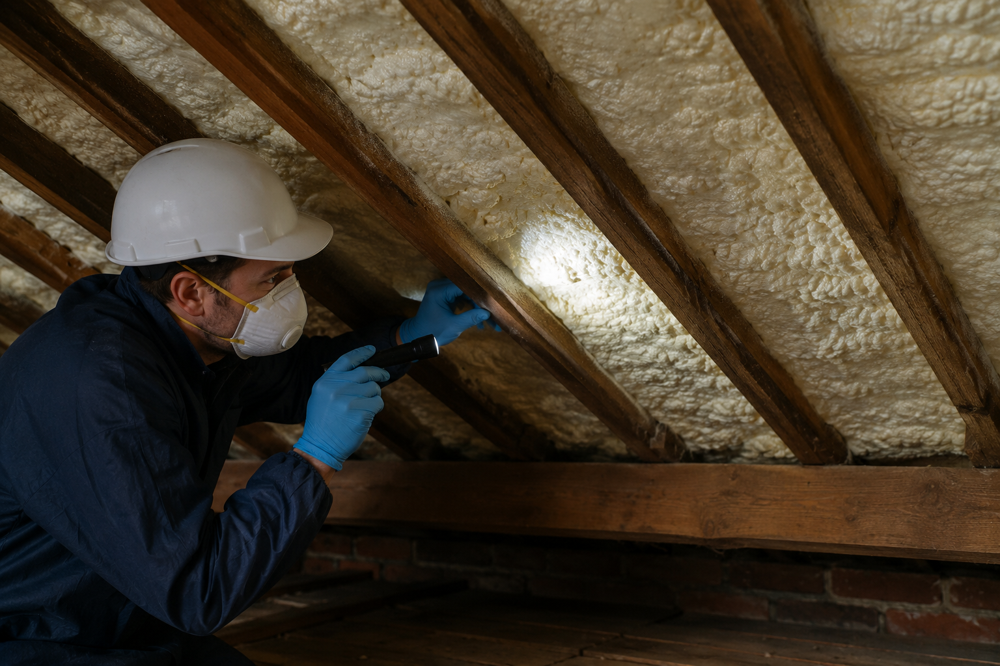

Closed-Cell Foam and Older Roofs
Dense, bonded foam on older roof structures needs careful assessment before removal or remediation is proposed.
Assess the interface before destructive work
Closed-cell foam can be more rigid and strongly bonded than open-cell foam, so the roof covering, felt, membrane, rafters and access limits matter.
The presence of closed-cell foam does not prove that every roof is damaged or that every property requires complete removal.

Stop and explain if risks change
If continued removal appears likely to cause avoidable damage, work should not simply continue without discussion. The risks, practical alternatives and need for appropriate roofing, timber or structural input should be explained first.
What affects the decision
Foam type, bond strength, roof age, coverings, visible timber condition, ventilation, access and the customer objective can all affect the next step.
Possible next steps
Options may include further assessment, specialist input, targeted remediation, controlled removal, monitoring or no immediate work.
Older roof caution
Fragile felt, aged timbers and limited access can change the risk of removal and should be discussed before a scope is agreed.
Related guidance
See the assessment and remediation process and the lender and surveyor question checklist.
Request a Free Remote Photo Review
Start with photographs and background information. If the issue cannot be assessed remotely, Insofix will explain whether a chargeable on-site assessment is the sensible next step.